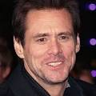
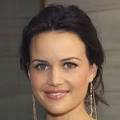

ELENCO
 
Los pingüinos del Sr. Poper es una película dirigida por Mark Waters con Jim ... Sinopsis: Mr. Popper (Jim Carrey) La fría relación de un serio hombre de negocios con su esposa y niños se vuelve interesante después de que él hereda seis traviesos pingüinos.
Director: Mark Waters
Título: Los pingüinos de papá (Hispanoamérica); Los pingüinos del Sr. Poper (España)
Guion: Sean Anders, Jared Stern, John Morris